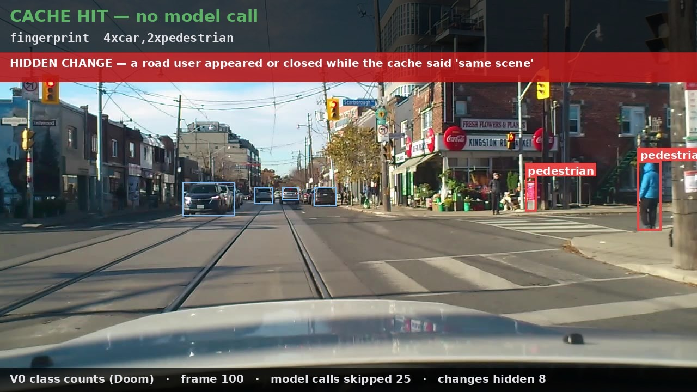
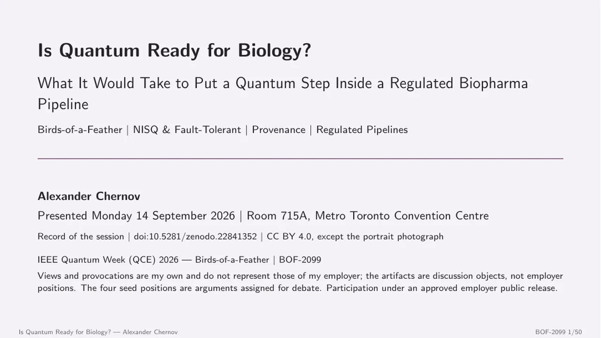
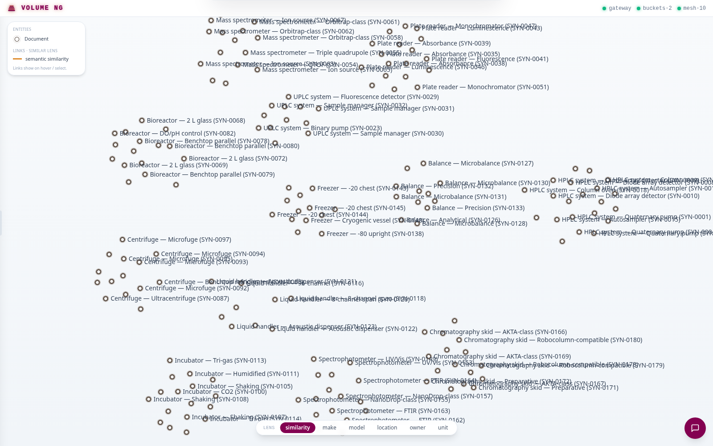
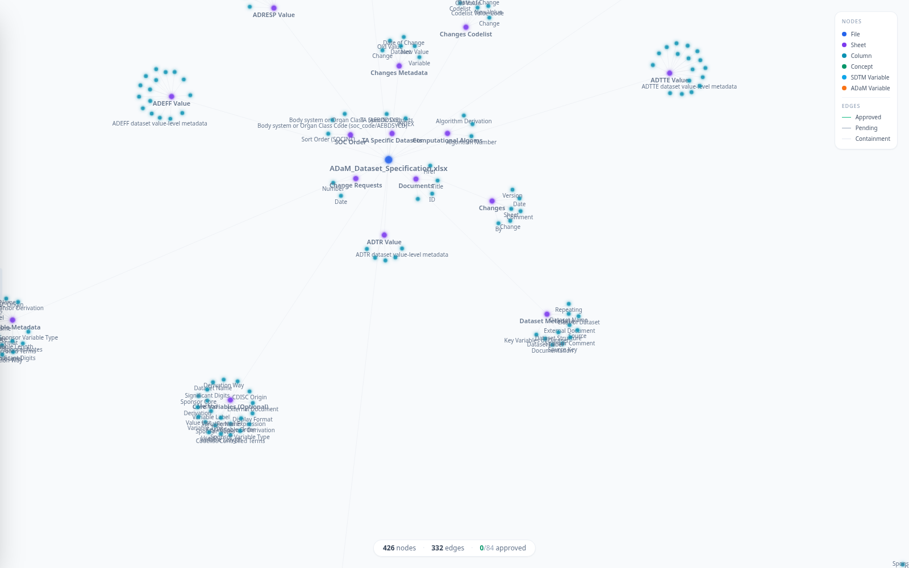
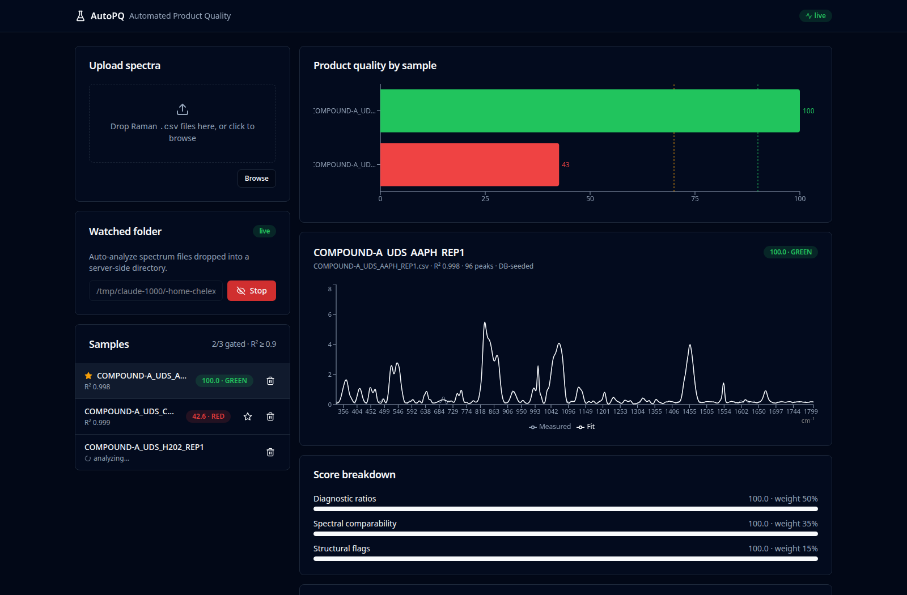
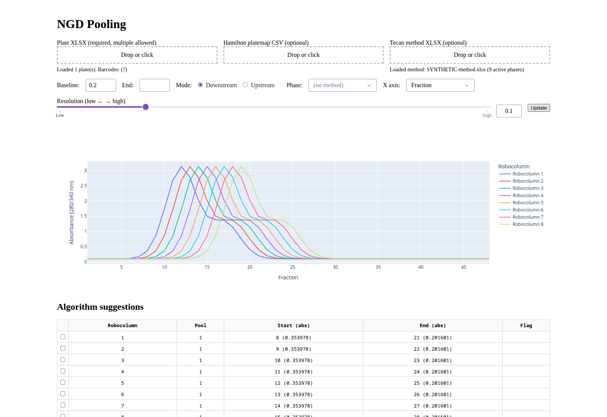
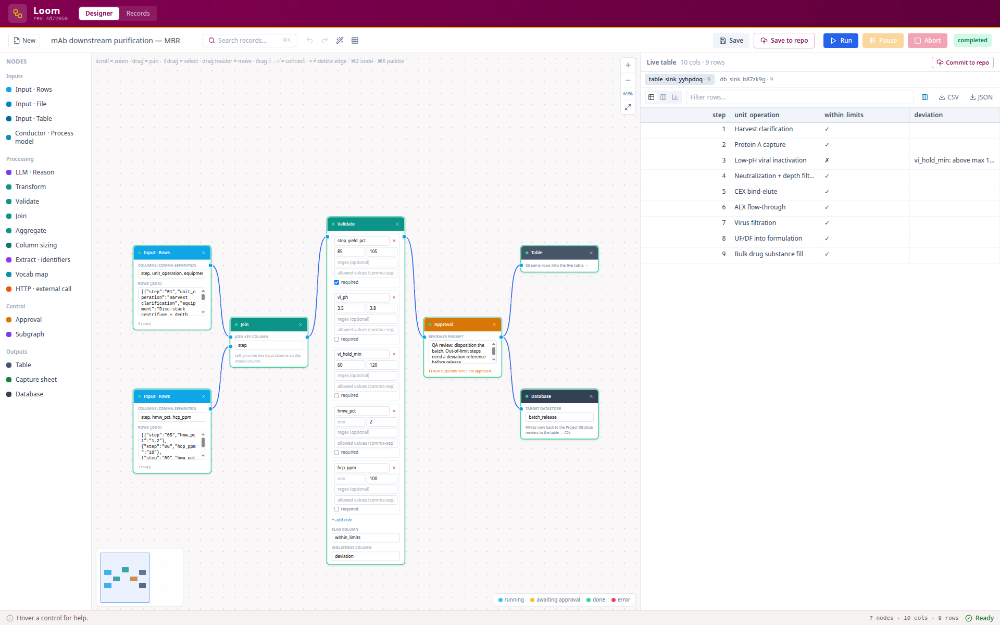

Associate Principal Data Engineer · Agentic AI & scientific data systems ·
IEEE member
Something proposes under uncertainty — what decides whether it may act?Ten systems, one question. Two of the ten are not
neural networks, which is the point rather than an omission.
Projects
The public ones first — they are the only entries a reader can
verify, and a verifiable entry earns the ones that follow it. Where a project has no public
URL that is stated rather than hidden behind a link that returns 404. Each title is also a
page of its own, which is what the copy button hands you.
A dataset that states what agents may do with it, and a contract that can be checked without seeing inside the implementation.
Specification plus reference implementation. The contract runs to fifteen assertions and eighty-five executable steps, portable across languages, and has been exercised against four runtimes, two dataset boundaries and one unrelated codebase — every one of them passing, with seventeen deliberately broken variants all caught.
An open specification and reference implementation for datasets that carry their own behavioural contract. A dataset declares the operations it admits and the conditions under which it admits them, so a caller can decide from the descriptor alone rather than by convention or by asking someone.
The contract is fifteen normative assertions expressed as eighty-five language-neutral vector steps, which is what makes it checkable against an implementation without access to that implementation's internals. The reference architecture passes all fifteen across four runtimes and two dataset boundaries; a second implementation sharing no code with it passes all fifteen as well.
Mutation analysis is the part that keeps the suite honest: seventeen targeted violations, seventeen detected, with every assertion independently exercised. Mean detecting assertions per mutant is reported at 2.2 and deliberately not treated as an optimization metric, because tuning a suite to raise it would measure the suite rather than the contract.
References
Gebru et al. (2021). Datasheets for datasets. Communications of the ACM 64(12), 86–92. doi:10.1145/3458723
Wilkinson et al. (2016). The FAIR Guiding Principles for scientific data management and stewardship. Scientific Data 3(1), 160018. doi:10.1038/sdata.2016.18
Jia and Harman (2011). An Analysis and Survey of the Development of Mutation Testing. IEEE Transactions on Software Engineering 37(5), 649–678. doi:10.1109/TSE.2010.62
A gate that decides, for every task in a bioinformatics pipeline, whether it may run — and records why either way.
A Nextflow hook, a policy, and one decision record per task. End-to-end timing came to 119 µs at the median over 210 decisions, published as a corpus anyone can replay. The load-bearing outcome was not that number but establishing by experiment that AWS's managed service honours a directive its own linter called unsupported.
Measured on a real nf-core pipeline rather than a synthetic one: 119 µs median for the whole gate process over 210 decisions, independently replayable from the published corpus.
The finding was not the latency. AWS's own Nextflow linter listed the hook the gate depends on among directives their managed service does not support, which would have put per-task governance out of reach. That file was two years stale and already contradicted by AWS's current documentation for a neighbouring directive. Treated as a hypothesis and probed against a local control: it runs. The gate now permits and refuses per task on the managed service.
Transferable principle: when an enforcement boundary matters, validate it experimentally rather than assume the documented boundary is the real one.
References
Di Tommaso et al. (2017). Nextflow enables reproducible computational workflows. Nature Biotechnology 35(4), 316–319. doi:10.1038/nbt.3820
Ewels et al. (2020). The nf-core framework for community-curated bioinformatics pipelines. Nature Biotechnology 38(3), 276–278. doi:10.1038/s41587-020-0439-x
Croissant can write down data-use conditions. No version of it specifies how any of them is evaluated.
What the descriptor leaves open, this closes: five operators, one verdict per request, and an audit trail behind it. Authority and conditions turn out to disagree in both directions, neither permit set containing the other, and the price of deciding is published rather than estimated at +0.0 µs warm, +11.7 µs cold.
No decision procedure, no bound on what a condition costs to check, no defined outcome for a condition an implementation cannot evaluate, and no record of what was checked.
This profile closes that: a dataset declares the operations it admits and the conditions under which it admits them, from a closed set of five operators, so a gate can decide from the descriptor alone and leave a decision record. Two carriers that decide identically are compared as whole decision records.
The measured result is the interesting one. Caller-side authority and data-side conditions disagree in both directions — each refuses requests the other admits, and neither permit set contains the other. Overhead disclosed rather than assumed: +0.0 µs warm, +11.7 µs cold per decision. All emitted documents load under mlcroissant 1.1.0 with zero errors.
Full-length article under review at the Journal of Web Semantics.
References
Akhtar et al. (2024). Croissant: A Metadata Format for ML-Ready Datasets. DEEM '24, SIGMOD/PODS workshop, 1–6. doi:10.1145/3650203.3663326
W3C (2018). ODRL Information Model 2.2. W3C Recommendation. w3.org/TR/odrl-model
Lawson et al. (2021). The Data Use Ontology to streamline responsible access to human biomedical datasets. Cell Genomics 1(2), 100028. doi:10.1016/j.xgen.2021.100028
2025 – present · Independent project, unaffiliated with any employer.
The descriptor decides whether to look again — and the decision, not only the detection, is what gets recorded.
1,712 consecutive frames of road footage, five per second. Skipping 43.6% of model calls left 28.5% of real scene changes stale; a richer descriptor cut that to 9.1% and bought fewer skips in exchange. A separate detector checks the result, so the thing being measured is not also the judge.

The measurement's own overlay on a frame of road footage: the descriptor matched, the previous interpretation was reused, no model was called — while the scene developed around a road user at the kerb.
Vision models are normally run on every frame. That is the safe default and an expensive one. The narrower question is whether a cheap scene descriptor can decide when the previous interpretation still holds, and whether the cost of being wrong about that can be measured rather than assumed.
Across 1,712 contiguous dashcam frames at 5 Hz, a class-count descriptor skipped 43.6% of candidate model calls and left 28.5% of material scene changes without refreshed perception. Adding spatial and scale information brought the second figure to 9.1%, and cost reuse to do it. The result worth reporting is not a single optimum but that the tradeoff is measurable, which turns scene representation into an explicit engineering parameter rather than an implementation detail.
A second, independent detector evaluates the same frames, so the measurement does not rest on the detector that also defines the state being evaluated. The two disagreed about the presence of vulnerable road users on 9.5% of frames. Neither is ground truth — both are detectors — so that figure is disagreement, not an error rate, and it is reported as such.
Stated on the site rather than left to be discovered: no vision model is invoked in the measurement itself. The replay determines when a call would occur and what deferring it costs. Nothing here has been validated for use in a vehicle.
Transferable principle: a cache that hides a state change is not a performance question but a governance one, and the reuse decision has to be observable before anyone can argue about it.
References
Kang et al. (2017). NoScope: Optimizing neural network queries over video at scale. Proceedings of the VLDB Endowment 10(11), 1586–1597. doi:10.14778/3137628.3137664
Geifman and El-Yaniv (2017). Selective classification for deep neural networks. NeurIPS 2017. arXiv:1705.08500
A variational quantum algorithm resubmits nearly the same circuit over and over. Whether the previous answer may be reused is a decision someone has to be able to audit.
Two demos, seeded and offline. One puts a nine-qubit assembly problem and a trained classifier behind a gate that logs every admission; the other drops quantum entirely for a fed-batch reactor model, to show what a regulated step is already expected to leave behind. Small enough to verify by brute force, and verified.

1 / 50
The 50-slide deck from BOF-2099, the Birds-of-a-Feather session at IEEE Quantum Week 2026 in Toronto: what evidence a quantum result must carry before a regulated biopharmaceutical workflow can evaluate it, with both demos as supporting material. Full deck on Zenodo, 10.5281/zenodo.22841352.
Two runnable demonstrations of what it takes to put a computational step inside a governed biology workflow. The first runs a published quantum genomics method and a trained quantum classifier on PennyLane behind a control plane that decides what may run and records what happened — admission control, rate limiting, a circuit cache and an event record, over QAOA de novo assembly with three reads and nine qubits, verified against brute force.
The second is deliberately not quantum: a mechanistic fed-batch CHO bioreactor under a contract of in-process limits, with a search controller that picks a feed plan from 256 candidates and writes the decision artifact. It is the yardstick — the kind of decision record a regulated bioprocess step already has to leave behind.
Neither demo claims quantum advantage. Every instance is small enough to check classically, and each one is checked. The demos are seeded and run offline, so the reported numbers repeat.
The companion control plane is offered to be attacked rather than admired: it runs entirely in the browser with no backend, so every verdict it reaches can be reproduced by the reader.
Lab assets as a queryable graph — 4,115 records, one entity graph, 10 MCP tools.
Rust and React, shipped both as a Tauri desktop app and as a WebAssembly build, over a corpus of 4,115 assets. The interesting claim is architectural: nothing was redesigned to get here — an existing document pipeline was aimed at equipment instead.

The entity graph over a pseudonymised corpus of 4,115 lab-asset records — units, equipment and control computers. The labels are invented; the distributions are real.
A Rust and React gateway that ingests laboratory assets from an asset platform's REST API, builds a semantic entity graph and index, and serves it through search, retrieval-augmented chat, an equipment view, an interactive graph, and a full Model Context Protocol surface — 10 tools, 2 resources, 5 code-generation prompts — consumable directly by Copilot and Claude. Desktop through Tauri, web through WebAssembly. Demonstrated on a 4,115-asset corpus.
Lab equipment data exists but is not reasonable over. Asking which instruments can run an assay and which are due for calibration means knowing where to look rather than knowing the question.
Architecturally the point is that it is a repointing, not a rebuild: the same ingestion, entity graph, ontology, retrieval and capability mesh moved from documents to equipment without redesign. The thesis is a data foundation, not a chatbot — the conversational surface is the demo, the entity graph and the capability mesh are the product.
Mappings proposed, not applied — 426 nodes, 332 edges, 0 of 84 approved. A mapping waits for a reviewer.
Runs against CDISC's public pilot, ranking 415 candidate variables against 110 known-good pairs with embeddings frozen between runs so the comparison holds. Inference happens in the browser on WebGPU. On derivations a frontier model reaches 0.38 top-1 against 0.06 lexical, on a leak-free benchmark.

426 nodes and 332 edges over the CDISC SDTM and ADaM specifications, 0 of 84 mappings approved — a mapping is a proposal until a reviewer accepts it.
Mapping study variables to analysis variables is slow, manual and repeated per study. A model can propose mappings, but a proposal accepted because the model sounded confident is not a mapping — it is a guess with provenance attached.
Built on the public CDISC pilot: embedding retrieval over a 415-variable candidate pool against 110 gold pairs, with identical cached embeddings across every run so comparisons mean something. Candidate scoring runs in-page over WebGPU, so the data does not leave the browser. A mapping is always a proposal a reviewer accepts, never something applied automatically.
On the derivation split, the hard half, lexical and embedding retrieval reach top-1 accuracy of 0.06 and 0.08; a frontier model reranking the same candidates reaches 0.38, replicated across three fresh runs, and a 7B on-premises model 0.10. The benchmark was rebuilt after the gold answers were found leaking into the baselines' candidate text. The gain depends on CDISC variable names, and recall is now the constraint: the right answer is in the top 25 for 31 of 50 derivations.
Under review at the IEEE BIBM 2026 LLMBDA workshop.
References
CDISC. Analysis Data Model (ADaM). CDISC foundational standard. cdisc.org
A gate decides whether a score may exist — six spectra all fit at R² 0.988 or better. The reference scores 100; the five stressed samples score 25.4 to 54.0.
Pinned model, pinned thresholds, pinned provenance, 41 tests, and a Pyodide build that matches the native engine. What it caught is the part worth repeating: a component-rescaling step that looked right on every chart, correlation around 0.9, while actual fit quality had gone to −608 with nothing raising an error.

Six forced-degradation Raman spectra fitted in the browser: all six pass the R² ≥ 0.9 gate, and only the reference scores green. The selected sample fits at R² 0.998 and scores 54.0. Compound code replaced with COMPOUND-A.
Spectral scoring done in notebooks is not reproducible across analysts, and the reasoning behind a score is not recoverable afterwards. This is a scoring loop with model, thresholds and provenance pinned, covered by 41 tests, plus a browser-native build running the same Python engine in-page through a Pyodide worker — the port reproduces the native reference exactly.
The finding is the part worth carrying anywhere. A post-fit rescaling step matched each component to the data independently, ignoring overlapping neighbours; in dense spectra the rescaled components summed to about 35 times the data. Shape correlation still read around 0.9, so every visual check passed — while R² had collapsed to −608 and every derived ratio was untrustworthy, with nothing reporting an error. The underlying fit had been correct all along.
A quality metric that measures only shape will not notice a magnitude error. Two checks that fail differently are worth more than one check that passes twice. The fix adopts the rescaling only when it does not worsen the residual: R² −608 to 0.98.
References
Butler et al. (2016). Using Raman spectroscopy to characterize biological materials. Nature Protocols 11(4), 664–687. doi:10.1038/nprot.2016.036
Newville et al. (2014). LMFIT: Non-linear least-squares minimization and curve-fitting for Python. Zenodo. doi:10.5281/zenodo.11813
An algorithm proposes, an operator admits — eight chromatograms with pool suggestions, each pending Approve, Reject or Combine.
Takes plate-reader output, draws per-column traces, suggests cut points from second derivatives, and puts an approve-or-edit step in front of the robot. Detection was rebuilt rather than tuned: one sample recovered from 0.26 to 0.98, and an aggregation index that had spanned 1.3–2.7 settled to 0.09–0.53.

Eight Robocolumn chromatograms across two plates, with the algorithm's 16 pool proposals beside them, each awaiting Approve, Reject, Combine or Edit. Synthetic run.
Reads plate-reader output, generates per-column chromatograms, proposes pools with a second-derivative detection algorithm, and lets an operator approve, reject, combine or edit before exporting a bundle that drives the next robotic run.
Generic peak detection found bands opportunistically, and when a diagnostic band was missed the ratio depending on it came back absent — reported as missing data rather than as a detection failure. The rebuild bridges noisy interior dips so one peak does not split into two, derives cut points from shoulder valleys and inflections, and harmonizes bands across samples so ratios are computed over canonical windows rather than per-sample ones. A previously failing sample went from R² 0.26 to 0.98; an implausible aggregation-index range of 1.3–2.7 fell to 0.09–0.53.
Said plainly in the report: harmonization fixes consistency, not detection. Where the fit still misses a band the ratio is genuinely absent — not estimated, not quietly interpolated.
This tool was agentic before the word: an algorithm proposes, a human admits, a robot acts. Any autonomous version does not add a gate, it replaces one that was already load-bearing — a far higher bar than automating something ungoverned. And because the output actuates, a gate beside the execution path is worthless.
References
Shukla et al. (2007). Downstream processing of monoclonal antibodies—Application of platform approaches. Journal of Chromatography B 848(1), 28–39. doi:10.1016/j.jchromb.2006.09.026
Wiendahl et al. (2008). High Throughput Screening for the Design and Optimization of Chromatographic Processes – Miniaturization, Automation and Parallelization of Breakthrough and Elution Studies. Chemical Engineering & Technology 31(6), 893–903. doi:10.1002/ceat.200800167
Chinn et al. (2023). A comprehensive assessment of the applicability of RoboColumn as a chromatography scale-down model for use in biopharmaceutical process validation. Journal of Chromatography A 1710, 464391. doi:10.1016/j.chroma.2023.464391
Approval is a node, not a convention — typed ports, only same-typed ones connect, and human approval sits inside the grammar.
A designer for master batch records (MBR) that executes them as electronic batch records (EBR), in Rust and React, with a no-backend browser build for places that will not host a server. One spine underlies every recipe — source, pre-process, reason, approve, sink — and the records live in version control, so review, promotion and rollback are the ordinary git ones.

A platform mAb downstream purification MBR, executed in the browser build: nine unit operations joined to their in-process controls, checked against five MBR limits, then held at a QA approval node. The executed record on the right flags one step — viral-inactivation hold above its 120-minute limit. Illustrative batch values; limits follow published platform ranges.
Batch records are authored as documents and executed as programs, and the gap between the two is where validation effort goes. This is a visual builder in Rust and React where the MBR is authored as a graph and every run of it yields the EBR, including a browser-only build with no backend at all, so the authoring surface works where a server cannot be deployed.
The grammar is a visual pipeline with a type system: boxes are nodes, arrows are typed edges — rows, table, scalar, signal — and only same-typed ports may be wired. Every recipe instantiates one spine: source, pre-process, reason (AI), approve (human), sink. Human approval is a first-class node in the grammar rather than a workflow convention bolted on afterwards — the same conclusion as the pooling gate above, reached independently in a different domain. Records are governed in git: review, environment promotion, rollback.
Underneath it, twenty years back to pharmaceutical manufacturing execution systems in validated GxP environments.
References
IEC (1997). IEC 61512-1: Batch control — Part 1: Models and terminology (ISA-88). International standard. webstore.iec.ch
U.S. FDA. 21 CFR Part 11: Electronic records; electronic signatures. Code of Federal Regulations. ecfr.gov
Kelley (2009). Industrialization of mAb production technology: The bioprocessing industry at a crossroads. mAbs 1(5), 443–452. doi:10.4161/mabs.1.5.9448
No public URL — internal system.
Live & installable
Running pages and published packages. Nothing here needs an
introduction from me to be checked.
Agentic DatasetssiteA machine-readable contract that lets datasets declare what agents can do, as 15 normative assertions with language-neutral conformance vectors.
Agentic VisionsiteSelective visual inference with observable decisions, replayed over 1,712 contiguous dashcam frames.
Agentic QubitsiteA control plane that refuses quantum results it cannot certify, running entirely in the browser with no backend.
Semantic Field CanvassiteA renderer for fields of nodes and links whose build fails if domain vocabulary appears anywhere in its source.
agentic-dataset-conformancePyPIThe contract as executable vectors, with a runner that needs no access to an implementation's internals. Apache-2.0 code, CC0 vectors.
authorized-recallPyPIRetrieval quality measured over the subset a principal is permitted to use. Apache-2.0.
September 2026Policy-Aware Supervisory Control for Observable Embodied Biomedical Robotic SystemsIEEE CBS 2026 — Cyborg & Bionic Systems, MunichAccepted; camera-ready.
July 2026Agentic Data Services: A Control-Plane Architecture for Adaptive Data WorkflowsIEEE BigDataService 2026 (CISOSE Congress), FukuokaIEEE, pp. 125–129.DOIIEEE Xplore
July 2026Dataset Descriptors for Autonomous and Observable Biomedical Data PipelinesIEEE EMBC 2026, TorontoPresented and in the conference proceedings.
May 2026Agentic Datasets as an Engineering Control PlaneIEEE CCECE 2026, MontrealIEEE, pp. 326–332.DOIIEEE Xplore
May 2026Agentic Datasets as a Control-Plane Abstraction for Data-Intensive SystemsANNSIM 2026 (SCS) — Work-in-Progress trackSCS Digital Library and conference proceedings.
Talks & sessions
Conference and community talks, newest first.
November 2026upcomingAgentic Datasets: Giving AI Agents More Autonomy Without Losing ControlAI+AI Toronto 2026 — the Agentic AI Summit
September 2026Is Quantum Ready for Biology? What It Would Take to Put a Quantum Step Inside a Regulated Biopharma PipelineIEEE Quantum Week (QCE) 2026, Toronto — Birds-of-a-Feather, moderatedSession page
September 2026Policy-Aware Supervisory Control for Observable Embodied Biomedical Robotic SystemsIEEE CBS 2026 — Cyborg & Bionic Systems, Munich
July 2026Dataset Descriptors for Autonomous and Observable Biomedical Data PipelinesIEEE EMBC 2026, Toronto
July 2026Agentic Data ServicesIEEE BigDataService 2026, Fukuoka
June 2026From ClickOps to GitOpsDynamicsCon Regional: Toronto
June 2026Making AI Systems PracticalBig Data & Analytics Summit Canada, Toronto
May 2026Agentic Datasets as an Engineering Control PlaneIEEE CCECE 2026, Montreal
May 2026Agentic Datasets as a Control-Plane AbstractionANNSIM 2026 (SCS)
March 2026Simulated Worlds for Agent EngineeringAgentCon 2026, Toronto
March 2026Making Agents PracticalAgentCon 2026, Toronto
Writing
Long-form articles. Each title links to the reprint at
brainapi.org/articles;
where the piece also ran on LinkedIn, that original is linked beside it.